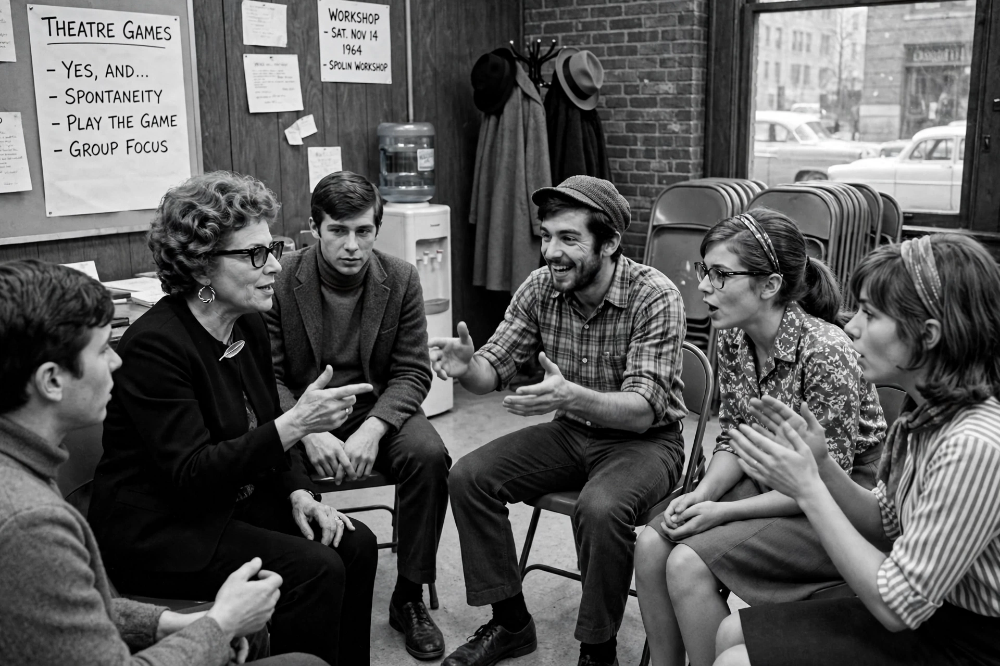

Viola Spolin (November 7, 1906 – November 22, 1994) was an American theatre academic, educator, and acting theorist. She is widely regarded as the creator of theatre games and a foundational figure in modern improvisational theatre. Her 1963 book Improvisation for the Theater became a standard text for actors, directors, and teachers.
| Viola Spolin | |
|---|---|
| Born | Viola Mills November 7, 1906 Chicago, Illinois, U.S. |
| Died | November 22, 1994 (aged 88) Los Angeles, California, U.S. |
| Occupation | Theatre educator, acting theorist |
| Known for | Theatre games; improvisational theatre |
| Children | Paul Sills |

Spolin was born in Chicago to a family of Russian Jewish immigrants. She studied at Hull House, the settlement house founded by Jane Addams, where she trained under Neva Boyd, a pioneer in recreational group work and play theory. Boyd's work on play, group dynamics, and social interaction profoundly influenced Spolin's later methods.
From 1939 to 1941 Spolin worked as a drama supervisor for the Works Progress Administration's Recreational Project in Chicago. There, working with immigrant children and adults who often did not share a common language, she developed exercises designed to teach acting through play rather than lecture. These exercises became her "theatre games," which treat acting problems as games with a focus, rules, and a point of concentration.
In 1946 she founded the Young Actors Company in Los Angeles. Her son, Paul Sills, carried her methods into the founding of The Second City in Chicago in 1959, making Spolin's games the backbone of modern sketch and improvisational comedy.
Central to Spolin's teaching is spontaneity: she held that creativity emerges when a player gives up self-consciousness and responds directly to the moment. Her games use concepts such as the Point of Concentration, side-coaching, and audience participation to free players from fear of judgment.
Spolin's theatre games are used worldwide in actor training, education, and therapy. The Spolin Games Library continues to preserve and teach her work.